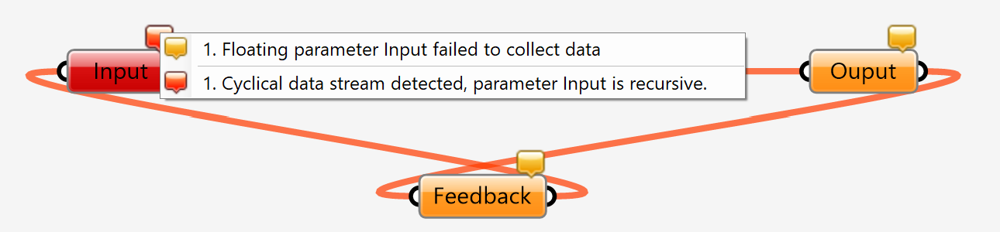
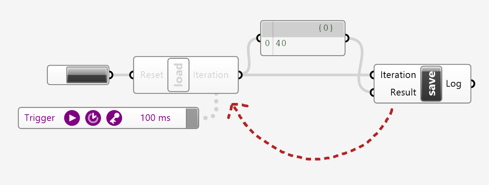
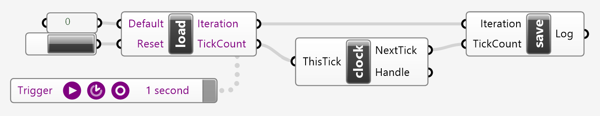
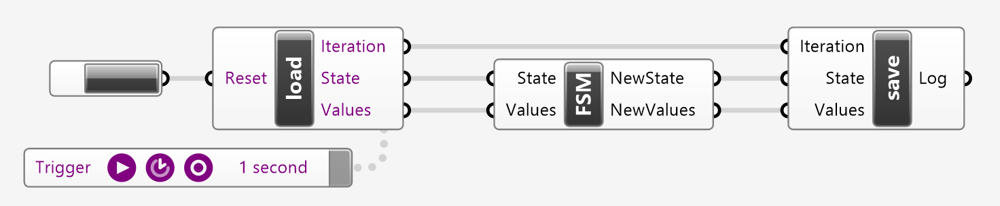
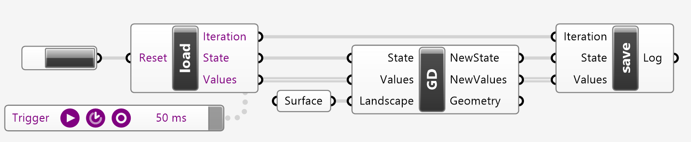
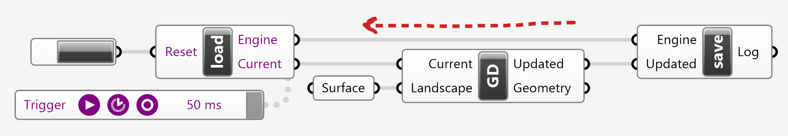

Graph Loops
One of the fundamental limitations of parametric modeling using the visual programming (VP) paradigm is that computation is represented in the form of a directed acyclic graph (DAG). The wires between components have a source-to-target directionality, where data can only flow one way, and the graph overall can only represent trees of data flows without feedback loops.
However, for several iterative processes, especially those involving optimization, this becomes a major limitation. If all computation can be encapsulated within a scripted component, then it is trivial to introduce feedback loops via iterative constructs such as for and while loops or ever recursion. If built-in or plug-in components are used then this is impossible.
Feedback cycles are forbidden because they cause never-ending loops which eventually exhaust system resources. In order to break out of the DAG structure we need thus: (1) to communicate information outside of the graph creating a notional wire that connects the outputs of process to its input, and (2) to introduce control logic to prevent infinite loops.

Minimal Setup
The minimal feedback system requires: (1) a controller that either resets the data flow to some default values or loads and forwards data from the last cycle, (2) some regular VP graph that receives some input parameters and outputs some results, (3) the other half of the controller which just stores the result of the current cycle such that they can be loaded for the next. The Trigger component is used for enabling and disabling the cycling process.

The minimal load state controller resets data to a default value, if the push button is pressed, otherwise it loads data from Rhino's document notes, decodes the data from string type into dictionary, using the built-in json library, and outputs the values so they can be used in the subsequent VP logic graph.
import Rhino, json
if( Reset ):
Rhino.RhinoDoc.ActiveDoc.Notes = ''
Iteration = 0
else:
data = json.loads( Rhino.RhinoDoc.ActiveDoc.Notes )
Iteration = data['Iteration']
The minimal save state controller receives all data that needs to persist the cycle from its input parameters, it packages them into a dictionary and used the json library to encode them into a string stored into Rhino's document notes.
import json, Rhino
data = {
'Iteration': Iteration + 1,
}
Rhino.RhinoDoc.ActiveDoc.Notes = json.dumps( data )
Basic Setup
The stages of a cyclical computation consist of: (1) initializing or loading the state variables of the current cycle, (2) updating of state variables with new values, and (3) persisting the updated state so it can be loaded in the next cycle.

Initialization
The data that flow along the cycles are defined as input parameters of the load-state controller. Their values represent the starting point or the default conditions. The controller must export the data via one or more output parameters so they can be used subsequently. In the reset condition the incoming initial / default values are exported. In the normal / in-loop condition the data are just deserialized and passed along.
import Rhino, json
if( Reset ):
Rhino.RhinoDoc.ActiveDoc.Notes = ''
Iteration = 0
TickCount = Default
else:
data = json.loads( Rhino.RhinoDoc.ActiveDoc.Notes )
Iteration = data['Iteration']
TickCount = data['TickCount']
Processing
The incoming data from the load-state controller are used as usual either via regular components or scripts. The responsibility of this logical section is to perform the requisite computations, to update the screen and eventually to output the new or next state variables for the following loop.
from Rhino.Geometry import Point3d, Circle, Line
circle = Circle( Point3d.Origin, 1.0 )
angle = ( ThisTick / 60 ) * ( 2.0 * 3.1415 )
Handle = Line( Point3d.Origin, circle.PointAt( angle ) )
NextTick = ( ThisTick + 1 ) % 60
Persistence
The objective of this logical section is to receive the updated data from the processing stage and store them for the upcoming iteration. Even though it is possible to modify the data in this stage, for instance the iteration variable is mutated, it is not recommended. It makes more sense to keep all computation in the processing stage.
import json, Rhino
data = {
'Iteration': Iteration + 1,
'TickCount': TickCount
}
Rhino.RhinoDoc.ActiveDoc.Notes = json.dumps( data )
Finite State Machines
Often a computation involves several stages where different actions take place. This process can be modelled using a finite state machine.

Initialization
The aim of this version of the load state component is to generalize its purpose so there is no need to edit it again. We need a convention to achieve this, whereby only two parameters will be used (1) the name of current state of computation and (2) a list of all associated data required.
import Rhino, json
if( Reset ):
Rhino.RhinoDoc.ActiveDoc.Notes = ''
Iteration = 0
State = 'Initialize'
Values = []
else:
data = json.loads( Rhino.RhinoDoc.ActiveDoc.Notes )
Iteration = data['Iteration']
State = data['State']
Values = data['Values']
Processing
The finite state machine's job is: (1) to perform some computations based on the current state and data values, and (2) to emit the following state and the updated data.
if( State == 'Initialize' ):
NewValues = [0.0]
NewState = 'Phase One'
elif( State == 'Phase One' ):
NewValues = [value + 1 for value in Values]
NewState = 'Phase Two'
elif( State == 'Phase Two' ):
NewValues = [value * 2 for value in Values]
NewState = 'Phase One'
else:
raise Exception( 'Unknown State' )
Persistance
This version of the save state component also aims to require not more changes from this point onwards. Therefore, all it needs to do is to store the new state and data.
import json, Rhino
data = {
'Iteration': Iteration + 1,
'State': State,
'Values': Values
}
Rhino.RhinoDoc.ActiveDoc.Notes = json.dumps( data )
Gradient Descent
The objective of this demonstration is: (1) to present how the finite state machine template can be modified and reused, towards a very simple optimization task, and (2) to illustrate how to input loop-invariant parameters and output geometric elements.

In the initialization state the output Geometry is empty, the initial parameter of the surface point is set to u, v = 0.0, 0.0 and the new state is set to Follow Gradient. In that state, the u, v values are unpacked, the point and normal of the surface at the parameters u, v are evaluated, the direction of steepest descent is computed by a sandwich cross products with the vertical Z direction, the new position q is computed as a small step towards the right direction, and its parameters are recovered so they can be used in the next iteration. For visualization a sphere is emitted via the Geometry output parameter. Finally, the new values are packed and new state is set to the current state, that is to keep following the gradient.
from Rhino.Geometry import Vector3d, Sphere
if( State == 'Initialize' ):
Geometry = []
NewValues = [0.0, 0.0]
NewState = 'Follow Gradient'
elif( State == 'Follow Gradient' ):
u, v = Values
p = Landscape.PointAt( u, v )
n = Landscape.NormalAt( u, v )
Z = Vector3d.ZAxis
g = Vector3d.CrossProduct( Vector3d.CrossProduct( Z, n ), Z )
q = p + g * 0.05
_, u, v = Landscape.ClosestPoint( q )
Geometry = [Sphere( p + n * 0.1, 0.1 )]
NewValues = [u, v]
NewState = State
else:
raise Exception( 'Unknown State' )
State Management
Serialization of state data via json and storage in Rhino's notes provides a layer of separation between cycles but introduces latencies, data conversion complications because not all native objects can be converted to json strings easily, and limits the number of components using the notes store concurrently. Avoiding all of the above can be achieved by passing along the python scripting engine from the load state component to the save state component.

Initialization
The initialization code defines a static data class that wraps around the concept of iteration data. It should not be edited but used verbatim in the copy-paste the whole component sense.
The components purpose is: (1) to package common data, namely the cycle number, the state identifier and user data, (2) to provide a mutation mechanism via the Update( ) method used by subsequent components, and (3) to bypass Grasshopper's automatic conversions, which tends to mess up the data flows.
''' The Current Scripting Engine
'''
Engine = ghenv.Engine
''' Static State Data Class
'''
class Static:
def __init__( self,
state = 'Initialize',
value = None,
cycle = 0 ):
self.Cycle = cycle
self.State = state
self.Value = value
def Update( self, state, value ):
return Static( state, value, self.Cycle + 1 )
def __repr__( self ):
return 'Cycle: {}\nState: {}\nValue: {}'.format(
self.Cycle, self.State, self.Value )
''' Peek / Poke Static Global State
'''
if( Reset ):
Current = Static( )
Engine.Runtime.Globals.SetVariable( '__Data__', Current )
else:
Current = Engine.Runtime.Globals.GetVariable( '__Data__' )
Processing
The processing component is responsible for (1) responding to the initialization state condition by setting the Updated output parameter via the Update( ) method of the Current state data object. Optionally, any additional output parameters may be initialized here; and for (2) creating and responding any additional required states and data mutations. The data must be stored in the Updated output parameter via the Update( ) method. Any additional output parameters may also be set here.
The demonstration below presents a case where user-data are stored in the form of a dictionary. It is however possible and perhaps more desirable to define a data value class instead of using string:object key-value pairs. To avoid issues with passing live references between cycles which may cause crashes, it is advisable to copy or treat data as immutable when possible.
''' Import Requisite Libraries
'''
from Rhino.Geometry import Vector3d, Sphere, PolylineCurve
''' Handle Data Initialization
'''
if( Current.State == 'Initialize' ):
''' State and Data Update
'''
Updated = Current.Update(
state = 'Follow Gradient',
value = {
'Params': [0.0, 0.0],
'Points': []
} )
''' Visualization (Optional)
'''
Geometry = []
''' Handle Specific States
'''
elif( Current.State == 'Follow Gradient' ):
''' Expand State Data Value
'''
u, v = Current.Value['Params']
path = Current.Value['Points']
''' Perform Computation
'''
p = Landscape.PointAt( u, v )
n = Landscape.NormalAt( u, v )
Z = Vector3d.ZAxis
g = Vector3d.CrossProduct( Vector3d.CrossProduct( Z, n ), Z )
q = p + g * 0.05
_, u, v = Landscape.ClosestPoint( q )
''' State and Data Update
'''
Updated = Current.Update(
state = Current.State,
value = {
'Params': [u, v],
'Points': path + [p]
} )
''' Visualization (Optional)
'''
Geometry = []
Geometry.append( Sphere( p + n * 0.1, 0.1 ) )
if( len( path ) > 2 ):
Geometry.append( PolylineCurve( path ) )
else:
raise Exception( 'Unknown State' )
Serialization
There is no serialization actually taking place. The save state component silently mutates the static global state of the parent component. Since the data is pushed back into the scripting engine there is also no need for data conversions.
The output Log parameter is populated with a cropped version of the data state string dump, which may completely omitted. Note that the character limit is because long strings connected to text panels crash Grasshopper.
''' Poke Data State Back to Origin
'''
Engine.Runtime.Globals.SetVariable( '__Data__', Updated )
''' Optional Data Logging
'''
limited = str( Updated )
if( len( limited ) > 512 ):
limited = limited[:512]
print( limited )